Activity: Using the Assemble command
Activity
In this activity you will learn how to use the Assemble command to position parts.
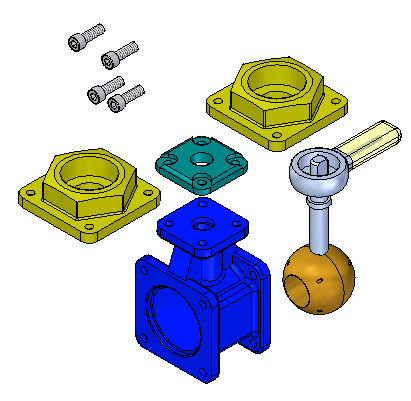
Click here to download the parts and assembly files for the activity.
When you complete this activity, you will be able to position parts in an assembly using the Assemble command. This activity teaches how to use the Assemble command to manipulate and fully position parts in an assembly.
Objectives
The activity covers the following:
-
Settings that affect the Assemble command.
-
Manipulation and positioning of parts using the Assemble command.
-
Editing and error recovery.
Positioning parts with the Assemble command:
There are many ways to correctly assemble the parts and subassembly associated with this activity. You will not be given specific instructions on how to assemble these parts other than the order in which to assemble the parts. How a part is positioned using FlashFit is predictable. With the Assemble command however, parts can be positioned incorrectly or over constrained. This activity will purposely position a part incorrectly so that the steps to correct the positioning will be covered.
The rules on the behavior of the Assemble command are listed next. You will be instructed to use these rules where appropriate.
Assemble command guidelines
The following guidelines are used in positioning the parts in this assembly using the Assemble command.
-
In the assembly you will be working with valve_housing.par which was placed first and is grounded. The other parts will be positioned relative to this previously positioned part.
-
FlashFit is the default assembly relationship creation mode and should be used.
-
Once you select a part to position, it will become transparent. Once it is fully positioned, or another part is selected, it will no longer be transparent.
-
If, in the middle of positioning a part, you decide to position another part, right-click to release the current part. It will no longer be transparent. The next part you select will then become transparent.
-
If you work in wireframe, rather than shaded, you will not have the visual benefit of the selected part being transparent. For that reason, it is suggested that you use Shaded with Visible Edges display mode while using the Assemble command.
-
Once a part is selected, it can be dragged to a new position with the left mouse button. The selected part is the part you are applying relationships to. Right-click to release the part.
-
To rotate a selected part that is unconstrained, use Ctrl + left mouse button.
-
FlashFit will determine whether to use a Mate or Planar Align relationship based on the closest orientation of the faces being matched. It is good practice to rotate the selected part into the approximate position before selecting the faces. After FlashFit, if the faces are 180° out of position, click the Flip button on the command bar.
-
Matching circular edges will quickly position a part, such as a fastener, in one operation. The axes are superimposed and the rotation is locked. You can unlock the rotation by editing the relationships in Assembly PathFinder. Refer to the section of this activity that addresses editing and error recovery.
Open assemble.asm.
Choose the Home tab→Assemble group→Assemble command  .
.
Click the Options button  on the command bar.
on the command bar.
Set the options shown below, then click OK.
The behavior of positioning faces with FlashFit will be shown first. For other parts, edges will be used.
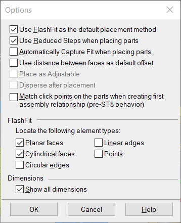
Move the parts to their approximate final position. Select a part to move. The part will become transparent. With the left mouse button, drag the part to the position shown. Right-click to release the part and left-click to select a different part to drag.
Position all the parts approximately as shown.
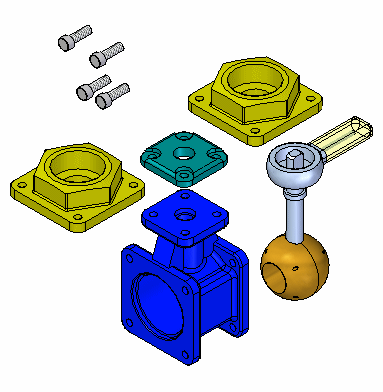
Right-click to release the last part selected. Select the top cap. Zoom in on the top face of the valve housing. Using FlashFit, mate the bottom face of the top cap to the top face of the valve housing as shown.
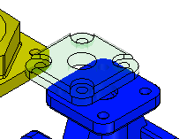
Select the cylindrical axis of a hole on the top cap, and then select the cylindrical axis of a hole in the top of the valve housing, as shown.
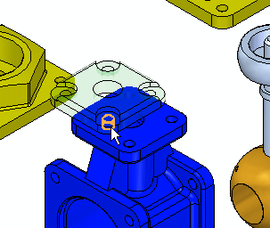
To completely position the part, repeat the previous step beginning with a different cylindrical axis in the top cap, and a corresponding cylindrical axis in the valve housing. Once the part is completely positioned, it will become shaded and no longer be transparent.
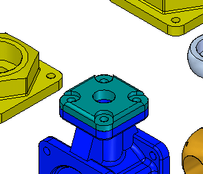
Position the first fastener on the top cap.
To begin positioning the next part, select the face shown of one of the fasteners.
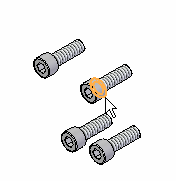
Select the face of the top cap as shown.
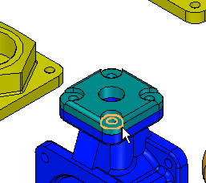
FlashFit determines whether to apply a Mate or Planar Align relationship based on the orientation of each of the faces. If the fastener is placed reversed, as shown, click Flip on the command bar to correct.
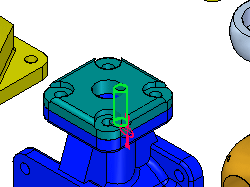
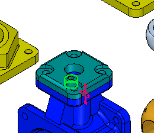
Select the cylindrical shaft of the fastener and the cylindrical axis of the corresponding hole. The fastener is positioned in the hole, but is transparent because there is freedom in the axis defined by the center of the shaft.
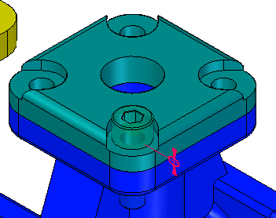
Select the flat face on the head of the fastener as shown, and then select the face on the top cap as shown. The bolt rotates such that the planes become parallel and a floating offset is applied which locks the rotation of the bolt.
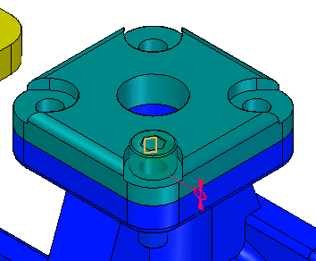
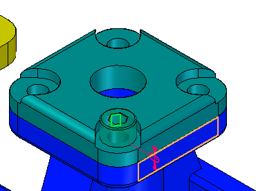
You will now position other fasteners by using FlashFit and selecting circular edges.
Click the options button on the command bar and set the options as shown.
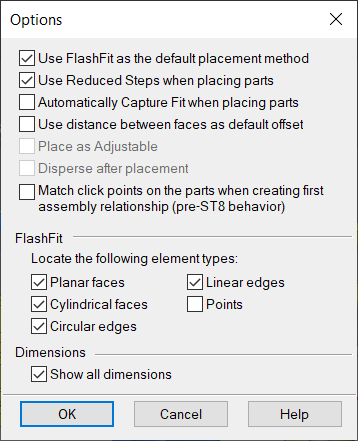
Position the fastener using the edges shown below.
Positioning by matching circular edges completely constrains the part by fixing the rotation. This is the preferred method.
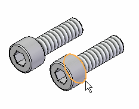
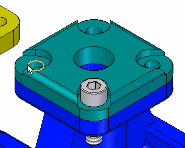
If the fastener becomes oriented as shown, it is because the original orientation of the faces of the fastener was closer to a Planar Align relationship rather than a Mate relationship.
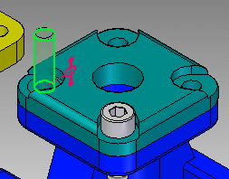
Because the part is completely constrained, the Assemble command has released this fastener and is ready to position another part. The fastener has become shaded indicating it is fully positioned. To position this fastener correctly, you will need to temporarily exit the Assemble command by clicking the Select tool. Once the fastener is positioned correctly, click the Assemble command to continue positioning parts.
If the fastener was placed upside down, select the fastener. It will become transparent. Select the Mate relationship, click Flip, then click OK to correctly position the fastener.
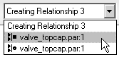
To position the remaining two fasteners, use these steps. Choose the Assemble command and select one of the remaining fasteners. To rotate the fastener into the approximate vertical position, click and hold Ctrl while you left-click and then drag.
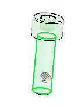
Position the fastener by selecting the same circular edges as the previous part. The fastener will be oriented correctly because the orientation was close to the final position. Right-click to clear the selection when done.
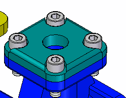
You will now position the handle subassembly by using FlashFit and selecting circular edges.
Position the subassembly handle and ball.asm by selecting the circular edges as shown.
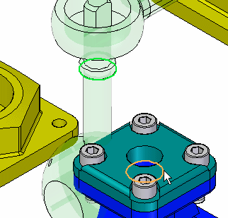
Use the Assemble command and the techniques learned from the previous steps to position each endcap into the correct position on the valve housing. This completes this activity. Close the assembly document.
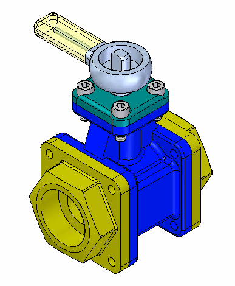
In this activity you learned how to use the Assemble command to quickly assemble a group of parts into an assembly. If all the parts making up an assembly are placed in an assembly window, the Assemble command can be used to complete the positioning of the parts into the final assembly.
This completes the activity.
-
Click the Close button in the upper-right corner of the activity window.
Answer the following questions:
-
How do you move an unconstrained assembly component when using the assemble command?
-
How do you rotate an unconstrained assembly component when using the assemble command?
-
How do you select a different assembly component to position without exiting the assembly command?
-
How do you move an unconstrained assembly component when using the assemble command?
Drag using the left mouse button.
-
How do you rotate an unconstrained assembly component when using the assemble command?
Hold the Ctrl key and drag with the left mouse button.
-
How do you select a different assembly component to position without exiting the assembly command?
Right click to release the current assembly component, the select the next component to position.